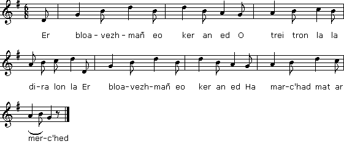

|
A propos de la mélodie: "Cette chanson m'a été chantée le 11 juillet 1894, par Louis Moullec, boulanger à Roscoff, qui est un chanteur émérite. Il n'a point d'émule dans les environs, mais il faut dire qu'il n'est pas de Roscoff, mais de Guerlesquin, c'est-à-dire du Pays de Tréguier. On remarquera que le premier vers [du chant N°3] est de 8 syllabes et le second de 7 (sauf exceptions), ce qui est moins sec dans le chant. Cet air peut être appliqué à des vers de 4 strophes de 8 syllabes." (Note d'Alfred Bourgeois). Bibliographie Si l'on considère le thème des trois (ou six) pommes comme l'élément identifiant ce chant, on constate qu'il a été collecté: - par La Villemarqué, pages 257-258 (chant n°1) en tant que "Son ar garantez" et, sous une forme différente, pages 199 et 285: chant N°2, "Pell zo amzer em-eus klevet". - Par J.-M. de Penguern, collection de manuscrits Tome 89: "Paotr e avaloù ruz" (Taulé, 1851) (=Gwerin 4); 202: "Er bloaz-mañ eo kêr an êd (Taulé, 1851) (vers 32-38). - et par Alfred Bourgeois (c'est le chant N° 3): "Marc'had ar merc'hed yaouank (Guerlesquin, 1894) (vers 28-32) Remarques Ces trois chants ne racontent pas la même histoire: Cette pièce a fourni à La Villemarqué plusieurs passages que l'on retrouve dans d'autres chants du Barzhaz: - strophes 5 et 6: Le lépreux, strophes 11 et 12. - strophes 7 et 8: même chant, strophe 10 (ces deux strophes reprennent presque mot pour mot un couplet du chant "Krouer an ne", noté page 149, en prolongement de celui de la page 6). - strophe 11: La conversion de Merlin, strophe 8. - strophes 11 à 14: La Villemarqué envisageait de les réutiliser dans La Quenouille d'ivoire, strophes 47 à 50 (Chant de Lozaïk filant sa quenouille). On passe de la page 199 à la page 285, pour tenir compte de la numérotation postérieure à l'assemblage des feuillets, et la chanson se poursuit, mais s'agit-il vraiment de la même chanson? C'est la dame qui parle: elle a épousé Yannik, qui cuve son vin dans un chant de genêt, alors qu'il gèle. Il ne consent à rentrer que pour accomplir son "devoir conjugal". Son épouse lui suggère de s'adresser à cet effet à une servante... Dans les trois derniers couplets, on voit le cynique garçon au pied du mur. Sa belle - il semble qu'il ait fait son choix - en le gratifiant d'une délicieuse soupe, l'invite à faire sa demande. Mais lui s'entête à ne pas parler mariage! |
About the tune "This song was sung to me on 11th July 1894, by Louis Moullec, a baker in Roscoff, who also is a proficient songster. Nobody can vie with him in the neighbourhood, yet he was not born in Roscoff, but in Guerlesquin, i.e. in the district of Tréguier. It is remarkable that the first line in each stanza [of song N°3] has 8 syllables, and the second 7 (but for a few exceptions), which makes the song sound softer. This tune may also accommodate a set of 4 stanzas of 8 syllable lines." (Note by Alfred Bourgeois). Bibliography Provided that the three (or six) apple motif may be used to distinguish this piece from others, it appears that it was collected: - by La Villemarqué, on pages 257-258, as song n°1, "Son ar garantez" and, as a different song, on pages 199 and 285, as song N°2, "Pell zo amzer em-eus klevet". - by J.-M. de Penguern, and recorded in his MS collection, Book 89: "Paotr e avaloù ruz" (Taulé, 1851) (=Gwerin 4); Book 202: "Er bloaz-mañ eo kêr an êd (Taulé, 1851) (lines 32-38). - And by Alfred Bourgeois (as song N° 3): "Marc'had ar merc'hed yaouank (Guerlesquin, 1894) (lines 28-32) Remarks Each of these three songs tells a different story: This piece provided La Villemarqué with several passages he inserted into other Barzhaz songs: - stanzas 5 and 6: The Leper, stanzas 11 and 12. - stanzas 7 and 8: same song, stanza 10 (these two stanzas repeat almost literally a strophe of the song "Krouer an ne", recorded on page 149, opposite page 6). - stanza 11: Merlin's conversion, stanza 8. - stanzas 11 with 14: La Villemarqué considered re-using them in The Ivory Distaff, stanzas 47 to 50 (Lozaïk's spinning song). We jump now from page 199 over to page 285, to account for the pagination made after the leaves were bound together to booklets, so as to read further the song, but is it really the same song? Now the girl is speaking: she married Yannik, who sleeps it off, out in a frozen broom field. He will vouchsafe to come home, only if it is to perform his husband's duty. His wife suggests he could ask a maid to that end... In the last three stanzas, we see the cynical boy with his back against the wall. His girl friend - he has apparently made up his mind - by treating him to a delicious soup, incites him to propose to her. But he stubbornly refuses to speak of marriage! |
|
BREZHONEK p. 257 1. Tri avalik ruz a viran O trei tron la la dira lon la Tri avalik ruz a viran Da c'hortoz benn ma teuy an hañv. 2. Tri aval din, tri d'am mestrez, Ha tri d'am servijourez. p. 258 3. Ma ouifen-me piv eo me gar, Me refe dezhañ va zri aval. 4. Pa n'ouzhon ket na piv me gar Mil maleüruz, maleüruz-se! Pa n'ouzhon ket na piv me gar Me a viro va zri aval! 5. Evel ar vleunienn war ar stank Ema kalon ar plac'h yaouank. 6. Ar vleunienn a ya gant an dour, Ha kalon ar paotr zo tretour. 7. Evel an aval war ar brank Ema kalon ar plac'h yaouank. 8. An aval ez a d'an douar, Ha kalon ar plac'h a ziskar. 9. Pa vez red kavell luskellat, Kalon ar plac'h da retalat. 10. Kalon ar mab a ra ivez Evit kas gounid boued ivez. 11. An dud yaouank a zoñje d'he A kouezh an aour deus ar gwez. 12. Ha padal delioù kouezhet a re A roy plas d'ar re nevez. 13. Gwell eo karantez leizh an dorn Ha ned eo madoù leizh ar forn. 14. Rak madoù zeu ha madoù ya Karantez nepred ne guita. 15. Ha bremañ deuet hir an deiz Ar merc'hed a bign 'beg ar gwez. 16. 'N eil re gand skeul, re all hep skeul Hag ar c'hwazed a ya da heul. KLT gant Christian Souchon |
TRADUCTION FRANCAISE p. 257 1. Trois pommes rouges que j'avais O trei tron la la dira lon la Trois pommes rouges que j'avais Gardées en attendant l'été. 2. Trois pour ma belle, trois pour moi, Et pour ma servante aussi, trois. p. 258 3. Qui m'aime? Si je le savais, Mes trois pommes lui donnerais. 4. Mais comme je ne le sais pas Hélas, suis-je donc malheureux! Mais comme je ne le sais pas C'est trois pommes-là sont pour moi! 5. Semblable à la fleur sur l'étang Le cur de la fille est changeant. 6. La fleur au gré de l'eau s'en va, Et perfide est le cur du gars. 7. A la pomme sur le pommier Le cur des filles fait penser. 8. La pomme tombe à terre un jour: Chez la fille ainsi va l'amour, 9. Dès que balancer un berceau, D'un petit enfant il lui faut. 10. S'il s'agit de gagner son pain, Le gars ne le lui cède en rien. 11. Les jeunes gens pensent à tort Que des arbres tombe de l'or. 12. Mais ce ne sont que feuilles mortes Qui s'en vont, que le vent emporte. 13. Mieux vaut, dans la main, plein d'amour Qu'or et argent, tout plein le four. 14. Si les biens viennent, les biens vont L'amour ne fait jamais faux bond. 15. Les jours rallongent désormais Les filles, aux arbres grimpez! 16. Allez, avec ou sans échelles! Que les gars grimpent après elles! Traduction Christian Souchon (c) 2015 |
ENGLISH TRANSLATION p. 257 1. Three little red apples I keep O trei tron la la dira lon la Three little red apples I keep Waiting for the summer to come. 2. Three apples for me, three for my sweetheart, And three for my "suitor". p. 258 3. If I knew which loves me, I would give her my three apples. 4. Since I don't know which loves me A thousand times unfortunate I am! Since I don't know which loves me I shall keep the three apples for me! 5. Like a flower on a pond Is a young girl's heart. 6. The flower drifts with the flow, The heart of the boy is treacherous. 7. Like an apple on a branch Is the heart of a young girl. 8. The apple falls onto the ground, And the heart of a girl decays. 9. When she is to rock a cradle, The heart of the girl weakens [?]. 10. - So does the heart of the boy When he is to earn a family's living. 11. Young people imagine Gold would drip down from the trees. 12. But in fact, only withered leaves fall As they give way for new ones. 13. Better is a handful of love Than heaps of riches in a stove. 14. For riches come and riches go Which a true love never will do. 15. And now, as days are growing long The girls shall climb on the trees. 16. With ladders, or without ladders And the boys will climb after them. |
|
BREZHONEK p. 199 1. - Pell zo amzer am-eus klevet - Me garfe ha me ne garfe ket - Pell zo amzer am-eus klevet Komz deus an amourousted. 2. N'eo ket e-barzh ar ger-mañ 'N hini a garan ar muiañ: 'Barzh ar maner Penn-ar-Red Ema va muiañ karet. 3. Tostik, tostik emahi din, O ya an hini a blij din! Ha he dorn 'barzh va hini, Ma hi gretefe, larit din! 4. C'hwec'h aval ruz a viran, D'ober al lez, pa zeuy an hañv, Daou din ha daou d'am mestrez, Ha daou d'am servijourez. 5. Mar ouifen piv em c'harfe, Va tri aval hi en-defe. Mez pa n'ouzhon ket piv am c'har, Me viro va zri aval. p. 285 6. -'N ur parkik balan war ar rev, Ema va dousik hag eñ mezv, Ha mar fell deoc'h-c'hwi komz outañ, Larit "Yannik" anezhañ! 7. - O Yannik, yannik, va fried, Deuit d'ho kwele da gousked! - Me ne yen ket d'am gwele Mar ne teufet ganin-me. 8. - Me ne lakin ket toaz e go, Rag saotrañ rin va manigoù, Yannik, Yannik, va fried, Klaskit ur vatez, mar karit! ... 9. Pelec'h... KLT gant Christian Souchon |
TRADUCTION FRANCAISE p. 199 1. Il y a longtemps que j'entends- - Je voudrais tant aussi, mais je n'ose - Il y a longtemps que j'entends Parler d'amour à tout instant. 2. En ce bourg n'allez pas chercher Celle que j'aime le plus au monde: C'est au manoir de Penaret Que demeure l'être adoré. 3. Autant dire qu'elle est tout près, Celle qui m'aura ravi mon âme Que sa main dans la mienne aurait, Sa place, quand elle voudrait! 4. Six pommes rouges que j'avais, Gardées, attendant que l'été vienne Deux pour moi, deux pour l'être aimé Deux pour ma servante. Comptez! 5. Si je savais qui m'aimera, Je lui donnerais bien mes trois pommes; Et comme je ne le sais pas, Les trois pommes restent pour moi. p. 285 6. - Dans le chant de genêt gelé, C'est mon ami, là-bas: il est ivre. Et si vous voulez lui parler, C'est "Yannik" qu'il faut l'appeler! 7. O Yannik, Yannik, mon époux, Assez dormi dehors sur la lande! - Dormir dans mon lit? Point du tout, Si ce n'est, bien sûr, avec vous! 8. - Moi, mettre la pâte à lever? Mes gants il faudrait que je salisse? Non, Yannik, vous exagérez La bonne est là, si vous voulez! ... 9. Où donc... Traduction Christian Souchon (c) 2015 |
ENGLISH TRANSLATION p. 199 1. I have heard for a long time I wish I had I wish I had not I have heard for a long time People speak of love. 2. She does not live in this town The girl I love best: But at Penaret Manor There lives my best-loved one. 3. Close, close to me she is, O yes, she is the one I love! I hold her hand in mine, Tell me if she would consent [to love me]! 4. Six red apples I keep To court girls when the summer has come, To for me, two for my sweetheart, And two for my suitor girl. 5. If I knew which truly loves me, She would get my three apples. But since I don't know which loves me, I'll keep my three apples. p. 285 6. - In a field of broom on the frozen ground, My dear husband sleeps it off, If we want to speak of him, Let us call him "Yannik"! 7. - O Yannik, Yannik, my husband, Go to bed and sleep! - I shall not go to bed Unless with you. 8. - I shall no make the dough rise, Because I could spoil my gloves, Yannik, Yannik, my husband, Look for a maid, if you want! ... 9. Where... |
|
BREZHONEK 1. Er bloavezh-mañ eo ker an ed O trei tron la la dira lon la Er bloavezh-mañ eo ker an ed Ha marc'had mat ar merc'hed 2. Evit daou lur emañ ar c'hant (div w.) Da choaz d'ar baotred yaouank 3. Ur paotr yaouank e oa er bed Ne voa pevar lur prenet 4. Evit mont gante war ar maez N nevoa graet peder vestrez 5. Na div anezho a oa koant Div all a oa honestamant 6. An div goant en deveus choazet An div all en deus losket 7. An div all lavare din-me - Va c'hasit ganeoc'h ivez 8. - Hola, hola 'ta, emezañ A-walac'h am eus bremañ 9. Devezhioù all pa deuin en-dro Marteze me o kemero 10. - Devezhioù all pa deuoc'h en-dro Marteze me vo marv 11. Me vo marv ha douaret Lakaet va c'horf er vered 12. Ma laro ar baotred yaouank "Amañ emañ div plac'h koant 13. Zo marv gant ar c'hoant gwaz Meur a hini a rei c'hoazh" 14. Me 'm eus ur wezenn penn va zi C'hwec'h aval ruz zo enni 15. Ha ma ouijen piv va c'har En nefe va c'hwec'h aval 16. Met pa n'ouzon ket piv va c'har Me zalc'ho va c'hwec'h aval 17. E ti va mestrez ez oun bet Soubenn al laezh am eus bet 18. Soubenn al laezh, viou warnezhi Hag amann rouzet d'hi c'holeiñ 19. Met ken kalet on bet a benn Ne 'm eus ket kredet hi goulenn. |
TRADUCTION FRANCAISE 1. Qu'il est cher, cette année, le blé! O trei tron la la dira lon la Il est bien cher, hélas, le blé, Mais les filles sont bon marché... 2. A savoir: deux livres le cent... (bis) Que de choix pour les jeunes gens! 3. Un jeune garçon ce jour-là Paya quatre livres, je crois. 4. Pour battre la campagne, il a Désormais quatre amies au choix. 5. Deux d'entre elles étaient jolies Les autres ... avec modestie. 6. - Les deux premières, je les prends Et j'abandonne le restant. - 7. Les deux autres alors ont dit - Non, non, il faut nous prendre aussi! 8. - Allons, leur dit-il, doucement! J'ai mon compte pour le moment. 9. Un autre jour je reviendrai Et, peut-être, je vous prendrai. 10. - Mais le jour où vous reviendrez, Je serai décédée, qui sait? 11. Je serai morte et enterrée Au cimetière dans l'allée. 12. Et que diront les jeunes gars? - Vraiment, les filles que voilà 13. Sont mortes de n'avoir pas eu De mari. Bien d'autres non plus. - 14. Le pommier près de ma maison A six pommes rouges, dit-on. 15. M'aime-t-on? Si je savais qui, Il les aurait toutes les six ... 16. Mais tant que je ne la sais pas Ces pommes, elles sont à moi. 17. - Chez ma belle je suis allé, Où j'eus droit à la soupe au lait. 18. La soupe au lait avec des ufs Couverte de beurre crêmeux! 19. Mais la tête est dure à mon âge: Je n'osai parler mariage. Traduction Christian Souchon (c) 2015 |
ENGLISH TRANSLATION 1. This year wheat coasts quite a great deal, O trei tron la la dira lon la This year wheat coasts quite a great deal, Lasses are not so expensive. 2. For two pounds a hundred they are (div w.) Offered to the choice of the lads. 3. A certain young lad, upon earth, Has bought some for four pounds 4. To go about the countryside With him, four girls he had acquired 5. Two, surprisingly good looking, Two, just honestly good looking. 6. The pretty two he selected. The two others he rejected. 7. However these two lasses said - Please, take us with you. 8. - O no, O no he said. I have enough, now. 9. Another day I shall return Maybe, then, I'll take you 10. - Another day, when you return Maybe, I will be dead. 11. I will be dead and buried My body will be in the churchyard. 12. And the lads wil say, passing by, "Here are two pretty girls 13. Who died of yearning for a husband. Many others still will" 14. I have a tree, at the end of my house: Six red apples are on it. 15. If I knew who does love me, She would have the six apples, 16. But since I don't know who loves me I shall keep the six apples. 17. I have been at sweetheart's house. I was treated to a good milk soup 18. To a good milk soup with an egg And a roasted butternut on top of it. 19. But I was so pig-headed And did not find it appropriate to propose to her. |